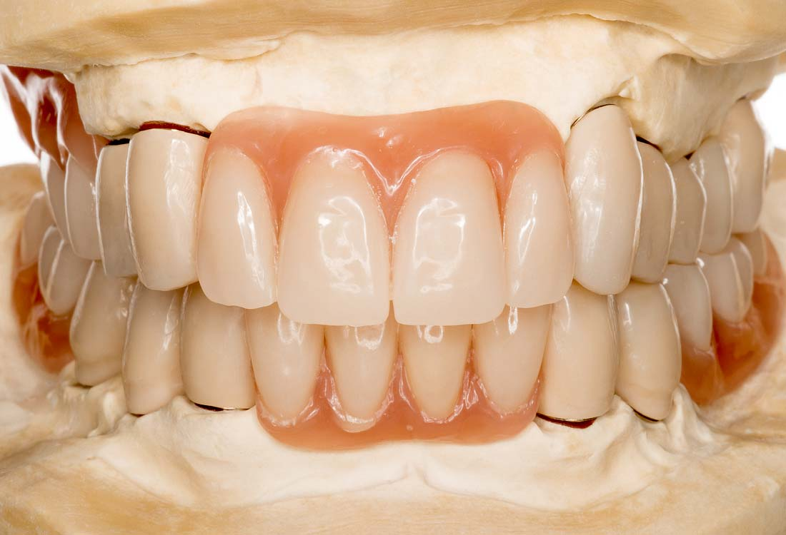

Dantų protezavimas, dantų protezai ant implantų - Dantų protezavimas
 Dantų protezavimas, dantų protezai ant implantų - Dantų protezavimasinfo@angitia.lt +370 37 323265 +370 699 057 58
Dantų protezavimas Pradžia Mūsų patirtis Dantų protezavimas Registracija Kainos Kontaktai Gamta vaikystei dovanoja pirmuosius dantukus sveikus Laimingi vaikai, anksti išmokę prižiūrėti savo dantis Deja, išsaugoti sveikus dantukus pavyksta ne visiems mažyliams Mažųjų bedančių šypsena natūrali – jie dar sulauks savų dantų, skirtų visam gyvenimui Tačiau netekus nors vieno nuolatinio danties, - neliks ir šypsenos Šypsenos džiaugsmą sugrąžina naujausios technologijos ir patyrę Angitia klinikos specialistai Angitia klinikoje įžiebta jaunatviška šypsena nepavaldi laikui Išimami pilni, daliniai ir mišrūs dantų protezai
Odontologijos klinikos „Angitia“ specialistų ilgametė patirtis padeda pritaikyti kiekvienam mūsų pacientui patį palankiausią individualų vieno arba kelių prarastų dantų protezavimo sprendimą. Gausi sertifikuotų išimamų pilnų, dalinių bei mišrių protezų įvairovė lengvai pritaikoma bet kurioje unikalioje situacijoje. Nes kiekvieno paciento prarastų dantų kiekis, jų netekimo priežastys, vieta žandikaulyje ir likusiųjų dantų būklė yra išskirtinė.
DaugiauFiksuoti dantų protezai, mikroprotezavimas ir paprastas protezavimas
UAB „Angitia“ klinikos odontologai patikimai sugydo dantų šaknų kanalus ir atkuria stipriai pažeistus dantis patvariomis bei estetiškomis dantų protezų karūnėlėmis arba dantų tiltais. Dantų protezams suteikiame jų gamintojo, LR įstatymų ir ES direktyvų numatytas garantijas. Yra pacientų, kuriems mūsų odontologijos klinikoje protezuoti dantys laikosi tvirtai, tarsi natūralūs, ir nekelia jokių rūpesčių nuo pat klinikos įkūrimo 1993 m. iki šiol.
Daugiau Dantų protezų ant implantų tvirtinimas
Plokštelinių dantų protezų, pritvirtintų ant implantų, vartojimo patogumas skiriasi nuo priklijuotų prie gomurio protezų panašiai, kaip saulės šviesa nuo mėnesienos. Todėl patyrę „Angitia“ klinikos odontologai - protezuotojai, dirbantys su naujausiomis ir pažangiausiomis dantų protezavimo technologijomis, siūlo estetišką, patvarų ir ilgaamžį dantų protezų ant implantų derinį, nes dantų implantų garantija suteikiama visam paciento gyvenimui.
Daugiau
Odontologijos klinika UAB „Angitia“ yra sudariusi sutartį su Kauno miesto teritorine ligonių kasa dėl kompensuojamo dantų implantavimo bei protezavimo senjorams ir pacientams iki 18 m. amžiaus .
Pastaruoju metu dantų atkūrimo kompensacijos procedūra supaprastinta, tad šių amžiaus grupių pacientams palanku pasirūpinti savo dantimis ir finansiniu, ir laiko atžvilgiais.
Maloniai prašome pasinaudoti savo teise į dantų implantavimo bei protezavimo kompensaciją UAB „Angitia“ odontologijos klinikoje, sukaupusioje nuo 1993 m. dantų protezavimo, o nuo 2001 m. – dantų implantavimo patirtį su dantų implantų garantija visam gyvenimui .
Pradžia Mūsų patirtis Registracija Kainos Kontaktai Dantų protezavimo svarba Išimami dantų protezai Fiksuojami dantų protezai Išskirtiniai dantų vainikėliai Dantų protezų ant implantų tvirtinimas Dantų likučių svarba protezavimui Dantų protezai su implantais ar be jų? Privatumas ir slapukų veiklaOdontologijos klinika „Angitia“
Savanorių pr. 273, Kaunas
Tel. +370 37 323265 , +370 659 057 55
Faksas 837321645
El. paštas info@angitia.lt
© 2016 - 2020 Odontologijos klinika „Angitia“ · Sprendimai: „Mobilioji erdvė“